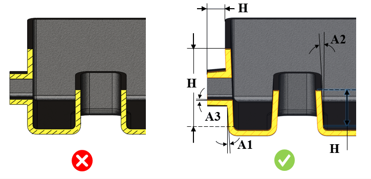

引き抜き方向に対して、パーツの内側壁および外側壁にドラフト角を付与する必要があります。
ドラフト角の設計は、砂型鋳造部品を設計するうえで不可欠な要素です。砂型鋳造プロセスでは、ドラフトはパターン（模型）設計のための逃げ（余裕）を与えます。適切なドラフト角を付与することで、金型（砂型）を損傷することなくパターンを引き抜くことができます。ドラフトがない形状やアンダーカットは追加の中子（コア）を用いれば作成できますが、追加コストが発生します。
ドラフト角の量は、造型方法、パターンの引き抜き（方向／方法）、およびパターンに使用される材料に依存します。
一般的なガイドラインとして、内側壁のドラフト角は外側壁の2倍にすることが推奨されます。

ここでは、
H = 面の高さ
A1 = 外側面のドラフト角
A2 = 内側面のドラフト角
A3 = 中子面（コア面）のドラフト角
ユーザーは、Excelシートのテンプレートに含まれる一括データを［Import］ボタンを使用して取り込むことができます。
標準テンプレート形式：
H1 |
H2 |
A1 |
A2 |
A3 |
0 |
25.4 |
3 |
3 |
1.5 |
25.4 |
50.8 |
1.5 |
2.5 |
1 |
50.8 |
102 |
1.0 |
1.5 |
1 |
ここでは、
H1 = 面の高さ = 最小（超過）
H2 = 面の高さ = 最大（～まで／以下（含む））